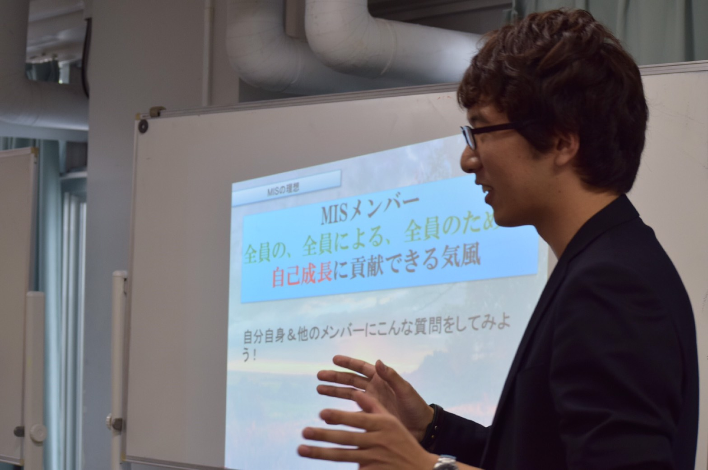

ファシリテーション部門は、MISの組織運営に携わり、そのさらなる発展・成長に貢献するための部門です。活動は、大きく分けて「内務」と「外務」の二つがあります。
内務では、MISにおいてプロジェクトの効果を最大化するために必須のスキルである「課題解決」、「プロジェクトマネジメント」および「コーチング」の勉強し、それらのスキルを団体のメンバーに教育します。
課題解決は、問題発見や発見した問題の原因分析、扱う問題領域の設定などを行ったうえで、適切な解決策を導き出し、具体的な実行案に落とし込むためのスキルです。問題解決型のプロジェクト実行を基調とするMISでは、問題設定を適切に行い、原因の究明や有効な解決策を模索する際に必須のスキルといえます。
プロジェクトマネジメントとは、プロジェクトを滞りなく進めるため、計画を組み立て、メンバーのタスク進捗やモチベーションの管理を通して、プロジェクトの運営を円滑化するためのスキルです。MISで各部門のプロジェクトの質を高め、より効率的に次世代リーダーへの成長を達成するために重要となってきます。
コーチングとは、現地の学生や団体の他のメンバーとの対話を通して、深い自己内省を行うためのスキルです。プロジェクト前にはその目的意識や達成目標についての考えを相互に引き出し、プロジェクトへのモチベーションの向上、方向性の共有を図ります。プロジェクト後には、コーチの質問や傾聴を通して、プロジェクトの達成度やMISの理念への到達度を内省してもらいます。次世代リーダーとしての成長を目指すMISにとって、こちらも必須の能力です。
ファシリテーション部門のメンバーは、これらをただ自分たちで学ぶだけではなく、部門外のメンバーに伝えるために勉強会などを定期的に行っています。
外務では、MISの活動に必要な資金を得るための「渉外」と、MISの活動を外部にPRするための「広報」を行っています。渉外は、企業に赴いてMISの活動を説明したり、財団に申請して資金をもらうなどの活動をします。プロジェクトをやるのに必要なお金はおもに渉外によって得ており、さまざまなプロジェクトを行ううえでは欠かせない活動といえます。広報では、ホームページやTwitter・Facebookの管理や更新を行っています。MISの活動に興味がある新入生や、協賛を考えてくれている企業などに活動を伝えるための重要なツールです。
以上がファシリテーション部門のおもな活動です。まさに、MISの活動を支える「縁の下の力持ち」としての印象が強いと思いますが、ファシリテーション部門のメンバーも各国で行われるプロジェクトには積極的に参加しています。
